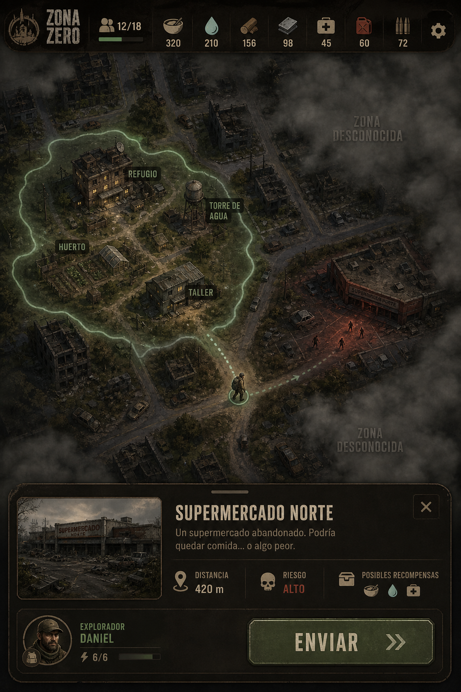
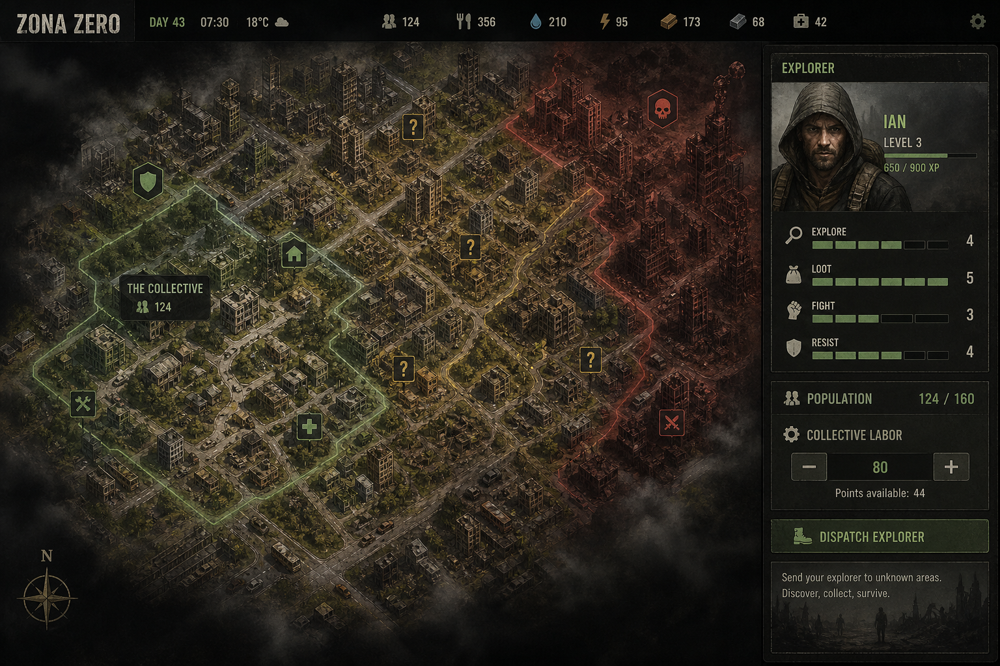

Propuesta artística · diseño 1.2
Muestra de dirección para aprobar antes del lote final de assets. Mundo continuo, población colectiva, exploradores como únicos rostros.
Sí / No: ¿esta es la dirección visual definitiva de Zona Zero?

